Lectures in this section
Each lecture links to the notes that cover it. Streaming labs create billable resources — delete them when finished.
- Amazon Kinesis — the streaming family and use cases ~5:00 Slides 84–85
- Kinesis Data Streams — producers, shards, consumers ~8:00 Slides 87–90
- Throughput, bandwidth, and latency ~6:00 Slides 92–95
- Enhanced fan-out versus shared throughput ~5:00 Slides 97–100
- Troubleshooting Kinesis performance ~7:00 Slides 102–107
- Kinesis Data Firehose — delivery, buffering, transforms ~8:00 Slides 109–112
- Kinesis Data Streams versus Firehose ~4:00 Slide 113
- Managed Service for Apache Flink ~7:00 Slides 115–117
- Amazon MSK — managed Kafka ~7:00 Slides 119–121
- MSK versus Kinesis Data Streams ~4:00 Slides 122–123
Amazon Kinesis overview
Kinesis is not one service — it is a family of four that covers different parts of the streaming pipeline. The exam treats them as separate products with different latency, retention, and operational models. Picking the wrong one is one of the most common wrong answers on Domain 1.
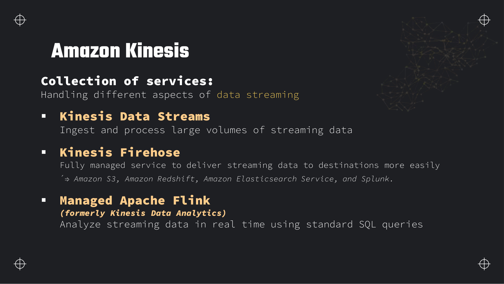
Kinesis Data Streams (KDS)
Ingest and process large volumes of streaming data. You manage shards (or use on-demand mode) and write custom producers and consumers. Data is retained 24 hours to 365 days and can be replayed.
Kinesis Data Firehose
Fully managed delivery to S3, Redshift (via S3), Amazon OpenSearch Service, Splunk, and HTTP endpoints. Buffers and batches — near real time, not sub-second. No retention, no replay.
Managed Service for Apache Flink
Formerly Kinesis Data Analytics. Run Flink applications with SQL, Python, Scala, or Java for real-time analytics, windowed aggregations, and anomaly detection on KDS or MSK sources.
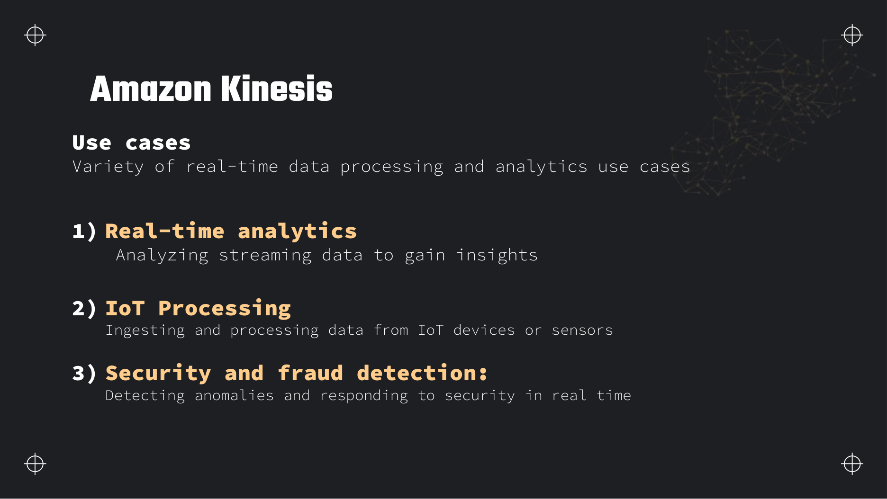
Kinesis Data Streams
Kinesis Data Streams is a durable, ordered log partitioned into shards. Producers write records; the stream stores them for a configurable retention window; consumers read at their own pace and can re-read from any point within retention. Everything downstream — Lambda, Flink, Firehose, custom apps — is just a consumer.
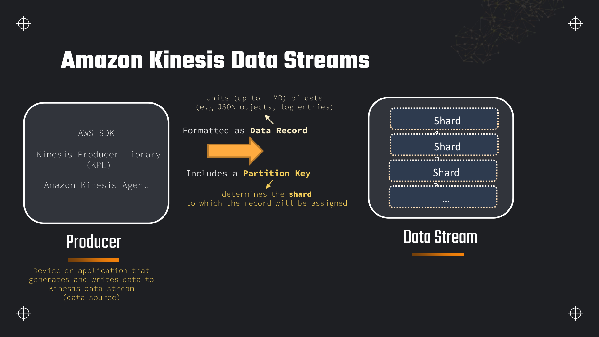
Producers — SDK, KPL, and Kinesis Agent
| Producer | When to use it | Key behaviour |
|---|---|---|
| AWS SDK / API | Custom apps, Lambda, small volume | PutRecord or PutRecords (batch up to 500 records or 5 MB). You handle retries and aggregation yourself. |
| Kinesis Producer Library (KPL) | High-throughput Java/C++ producers | Automatic aggregation (pack many user records into one KDS record), efficient batching, configurable retries and backoff. Adds a de-aggregation step on the consumer side. |
| Kinesis Agent | Log files on EC2 | Daemon that tails files and ships lines to KDS. Zero custom code; configure paths and stream name in a properties file. |
KPL aggregation detail: The KPL packs hundreds of small user records into a single 1 MB KDS record using a protobuf envelope. This dramatically improves throughput when events are small (clickstream, metrics). Consumers must use the KCL with the KPL de-aggregation library (or Managed Flink / Firehose, which handle it automatically) to unpack individual user records. Writing with KPL and reading with a plain SDK loop without de-aggregation returns opaque blobs — a common integration bug.
aws kinesis put-record \
--stream-name dea-lab-events \
--partition-key "customer-42" \
--data '{"event":"page_view","page":"/checkout"}' \
--region us-east-1
# Response includes ShardId and SequenceNumber — both are unique per record.import json, time, boto3
from botocore.exceptions import ClientError
kinesis = boto3.client("kinesis", region_name="us-east-1")
STREAM = "dea-lab-events"
def put_batch(records):
for attempt in range(5):
try:
resp = kinesis.put_records(
StreamName=STREAM,
Records=[{
"Data": json.dumps(r),
"PartitionKey": r["customer_id"], # spreads load across shards
} for r in records]
)
if resp["FailedRecordCount"] == 0:
return
# retry only failed entries
records = [records[i] for i, x in enumerate(resp["Records"]) if "ErrorCode" in x]
except ClientError as e:
if e.response["Error"]["Code"] != "ProvisionedThroughputExceededException":
raise
time.sleep(2 ** attempt) # exponential backoff
raise RuntimeError("shard still hot after retries")
events = [{"customer_id": f"c-{i}", "amount": i * 10} for i in range(100)]
put_batch(events)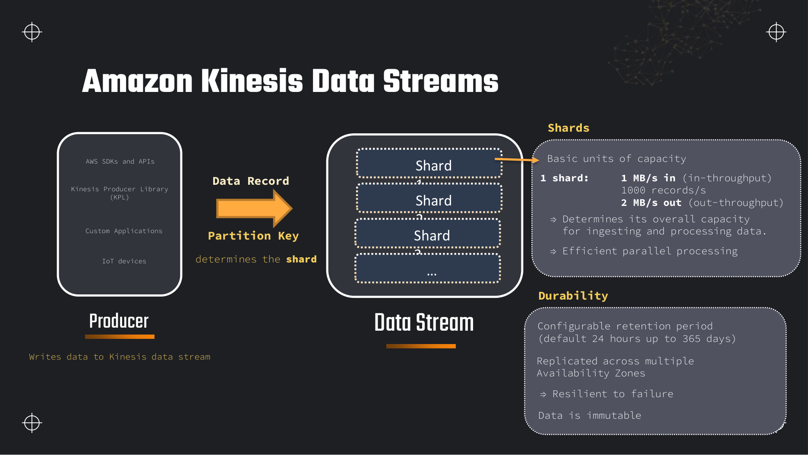
Partition keys, sequence numbers, and ordering
The partition key is a string (max 256 characters) that determines shard assignment via MD5 hash. All records sharing a partition key land on the same shard and are strictly ordered by sequence number — a unique, increasing identifier per shard assigned by Kinesis at write time. Different partition keys may land on different shards and have no ordering relationship.
Design partition keys to spread load evenly. A key like device-id with millions of unique values distributes well. A key like country=US with one hot value creates a hot shard that throttles while other shards sit idle.
Capacity modes — provisioned versus on-demand
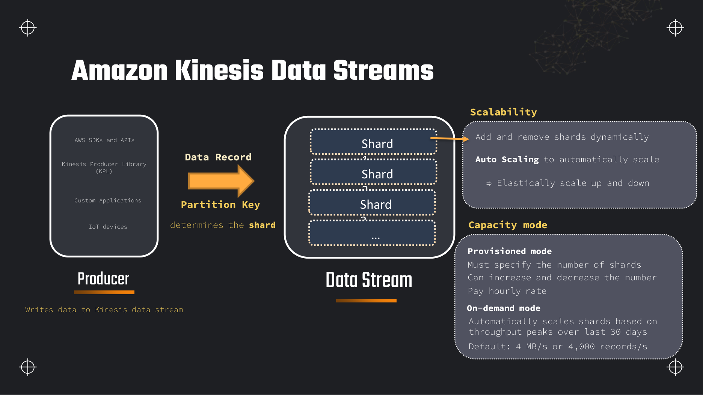
| Mode | How it scales | Default / limits | Best for |
|---|---|---|---|
| Provisioned | You add or remove shards manually, or use Application Auto Scaling on shard count | Per-shard: 1 MB/s in, 2 MB/s out (standard consumers) | Predictable, steady workloads where you want cost control |
| On-demand | AWS scales shard count automatically from observed peaks over the last 30 days | Starts at 4 MB/s and 4,000 records/s write; scales up to 200 MB/s and 200,000 records/s | Spiky or unknown traffic; least operational overhead for capacity |
Resharding — split, merge, and the limits
In provisioned mode you scale by splitting shards (one shard → two, doubling ingest capacity for that key range) or merging shards (two → one). You can also run UpdateShardCount for a target shard count. Splits and merges take minutes; during resharding consumers use both old and new shard iterators. On-demand mode handles this internally.
A stream supports up to 500 shards (or the on-demand equivalent). Resharding cannot split below the minimum hash-key range of a parent shard.
Consumers
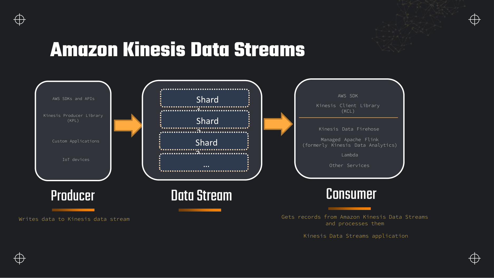
GetRecords using a shard iterator. The Kinesis Client Library (KCL) manages shard discovery, load balancing across workers, and checkpointing. Firehose, Lambda, and Managed Flink are managed consumers — you configure them, not code them.KCL checkpointing: KCL stores consumer progress in a DynamoDB table (one row per shard lease). On restart, the consumer resumes from the last checkpointed sequence number. If the DynamoDB table is under-provisioned, checkpoint writes fail and you get ExpiredIteratorException or lost progress — size the table for your shard count.
Delivery semantics: KDS guarantees at-least-once delivery, not exactly-once. A consumer that crashes after processing but before checkpointing will re-read records. Design idempotent sinks — covered in Section 5.
Kinesis Data Streams — producers through to consumers
Security — encryption and VPC endpoints
Server-side encryption (SSE): Enable SSE-KMS on a stream so records are encrypted at rest with a customer-managed or AWS-managed KMS key. Producers and consumers need kms:Decrypt and kms:GenerateDataKey on the key in addition to Kinesis IAM permissions. In-flight data uses TLS by default.
VPC endpoints: Use an interface VPC endpoint for kinesis-streams so producers and consumers inside a private subnet reach KDS without a NAT Gateway. Same pattern applies to Firehose and other AWS APIs — see Section 19.
{
"Records": [{
"kinesis": {
"kinesisSchemaVersion": "1.0",
"partitionKey": "customer-42",
"sequenceNumber": "49607533307480206604909095037592857366329529635723193219560170805475862598368",
"data": "eyJldmVudCI6InBhZ2VfdmlldyJ9",
"approximateArrivalTimestamp": 1722691200.123
},
"eventSource": "aws:kinesis",
"eventVersion": "1.0",
"eventID": "shardId-000000000000:49607533307480206604909095037592857366329529635723193219560170805475862598368",
"eventName": "aws:kinesis:record",
"eventSourceARN": "arn:aws:kinesis:us-east-1:123456789012:stream/dea-lab-events",
"awsRegion": "us-east-1"
}]
}Throughput and latency
The exam distinguishes throughput (how much data moves per second) from bandwidth (the theoretical ceiling) and latency (how long from write to read). Confusing these three leads to wrong scaling decisions.
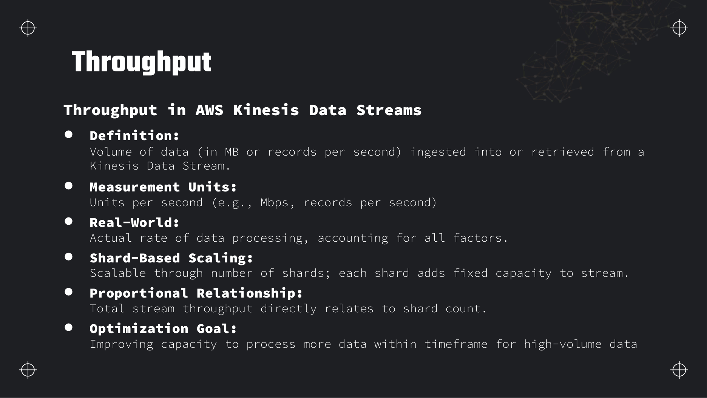
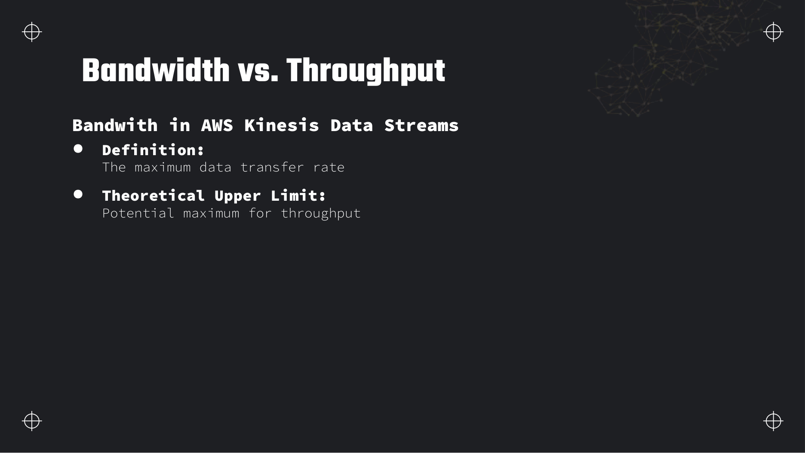
| Consumer type | Typical propagation delay | Read throughput per shard |
|---|---|---|
| Standard (shared throughput) | ~200 ms after record is available, plus polling interval | 2 MB/s shared across all standard consumers |
| Enhanced fan-out (EFO) | ~70 ms — push over HTTP/2 | 2 MB/s dedicated per registered consumer |
Enhanced fan-out
By default, every standard consumer on a shard shares the 2 MB/s read limit — that is fan-out with a bottleneck. Enhanced fan-out (EFO) gives each registered consumer its own 2 MB/s pipe per shard, pushed over HTTP/2 instead of polled.
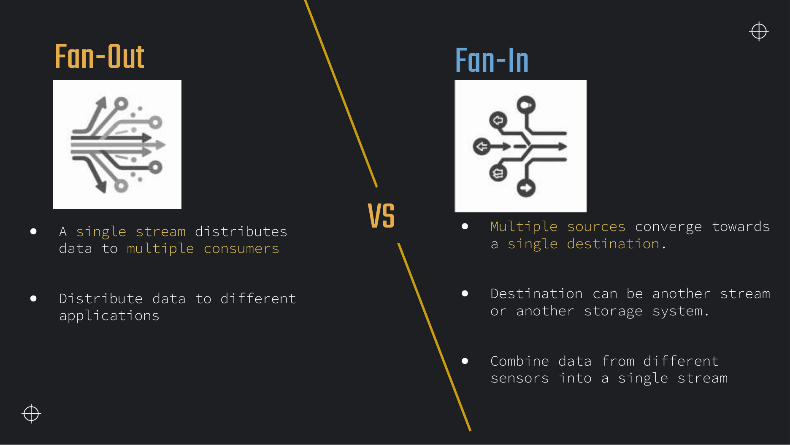
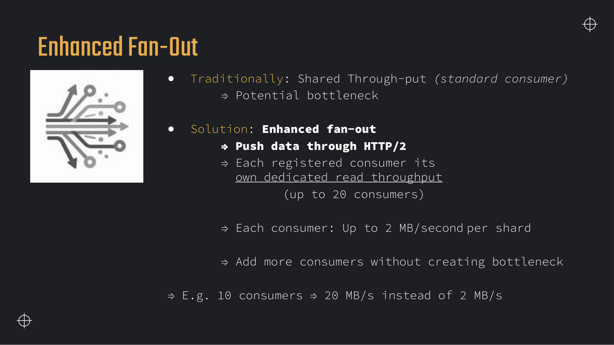
Troubleshooting and performance
Most Kinesis production issues fall into three buckets: producers hitting shard write limits, consumers falling behind, and iterator or checkpoint failures. The deck spreads these across six slides — consolidated here as an exam-ready reference.
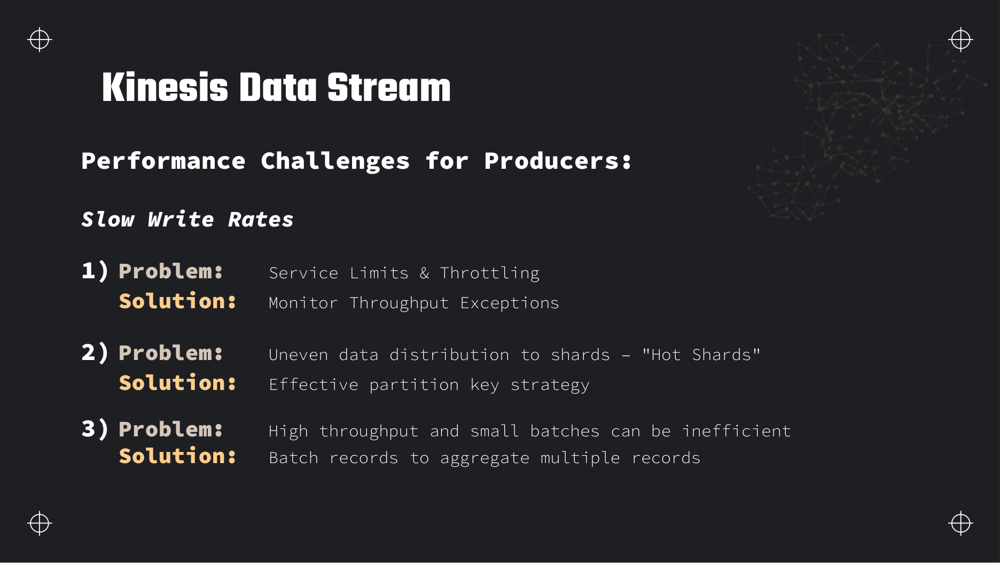
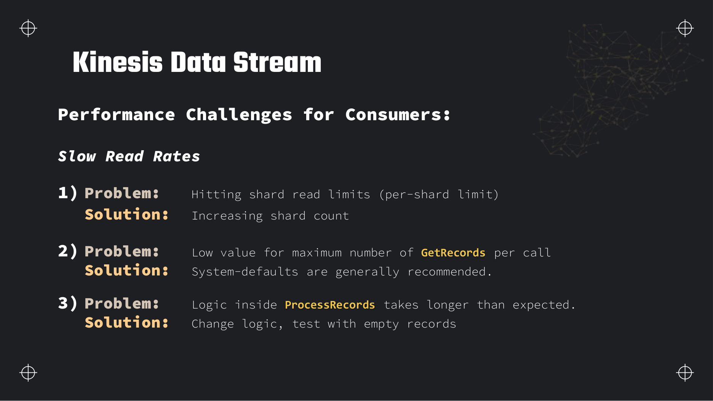
processRecords).Troubleshooting reference table
| Symptom | Likely cause | Fix |
|---|---|---|
ProvisionedThroughputExceededException on write | Shard ingest limit exceeded (1 MB/s or 1,000 records/s per shard) | Add shards, switch to on-demand mode, use KPL aggregation, implement exponential backoff retries |
| Throttling on one shard only; others idle | Hot shard — skewed partition key | Redesign partition key for even distribution (suffix with random salt, then dedupe downstream) |
| High API costs; low effective throughput | Many small PutRecord calls without batching | Batch with PutRecords or use KPL aggregation |
| Slow consumer read; iterator age climbing | Shared 2 MB/s read limit hit across consumers | Register consumers for enhanced fan-out, or add shards to spread partitions |
GetRecords returns empty array repeatedly | No new records yet at iterator position | Normal — keep polling; KCL handles this automatically |
ExpiredIteratorException | Consumer idle > 5 minutes, or shard closed after resharding | Resume from TRIM_HORIZON or LATEST; after resharding, call DescribeStream for new shard IDs |
| Records processed twice or gaps in output | At-least-once semantics; checkpoint after failed processing or unhandled exception | Checkpoint only after successful processing; make sinks idempotent |
| KCL stops advancing; DynamoDB errors | Checkpoint table under-provisioned for shard count | Increase DynamoDB WCU on the KCL lease table, or use on-demand billing on the table |
IteratorAgeMilliseconds steady increase | Consumer logic slower than ingest rate | Scale out KCL workers, optimise processing, add shards, or increase retention as a buffer |
IteratorAgeMilliseconds sudden spike | Transient API or dependency failure | Check CloudWatch for throttling; verify downstream service health |
| KMS AccessDenied on put or get | SSE-KMS enabled but IAM role lacks key permissions | Add kms:Decrypt, kms:GenerateDataKey to producer/consumer role; update key policy |
| Too many consumers throttled | More than five GetRecords calls per shard per second | Reduce polling frequency, consolidate consumers, or enable EFO |
ExpiredIteratorException happens when you stop calling GetRecords for more than five minutes — not because DynamoDB lacks capacity. DynamoDB capacity problems on the KCL lease table cause checkpoint failures and shard lease loss, which is a different failure mode with similar symptoms (reprocessing or stalling).Kinesis Data Firehose
Firehose is the load service: it accepts streaming records, optionally transforms them, buffers them into batches, and delivers them to a destination. You do not write consumer code, manage shards, or replay data. If the question says "deliver logs to S3 with least effort", Firehose is the answer unless the requirements explicitly need sub-minute latency with replay.
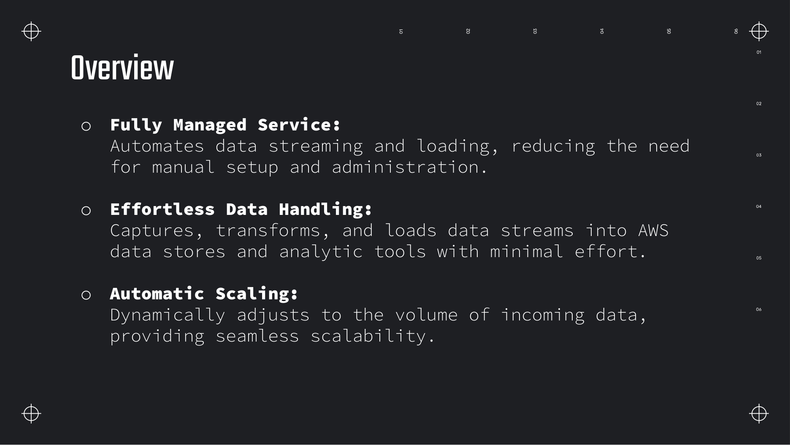
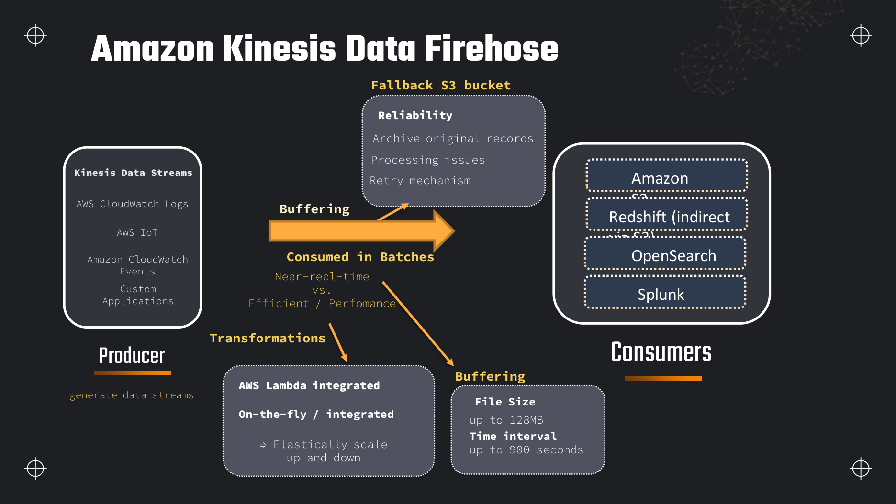
Firehose — buffer, transform, deliver, and error handling
Producers and destinations
Producers include direct PutRecord/PutRecordBatch API calls, Kinesis Data Streams (Firehose as a consumer), CloudWatch Logs subscriptions, CloudWatch Events/EventBridge, AWS IoT rules, and custom applications. Destinations are Amazon S3, Amazon Redshift (via an intermediate S3 stage and a COPY command), Amazon OpenSearch Service, Splunk, Datadog, New Relic, MongoDB, and generic HTTP endpoints.
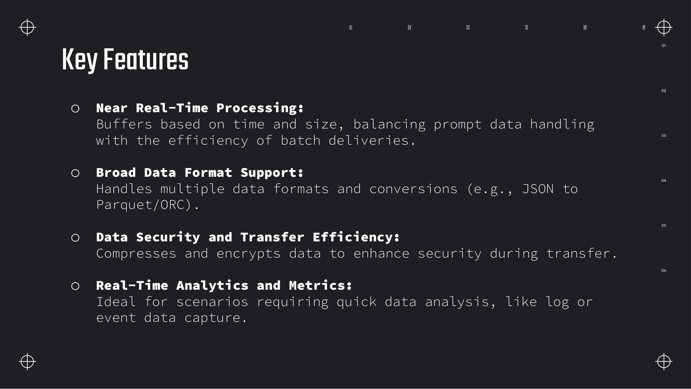
Buffer size and buffer interval
Firehose flushes a batch when either threshold is hit:
- Buffer size: 1–128 MB (default varies by destination; S3 default is 5 MB)
- Buffer interval: 60–900 seconds (minimum 60 s for S3; up to 900 s for some destinations)
Smaller buffers and shorter intervals → lower latency, more S3 objects, higher cost. Larger buffers → better compression and fewer files, higher latency. Exam questions that say "within one minute" need a buffer interval ≤ 60 seconds.
Transformation and format conversion
Lambda transformation: Each buffered batch is passed to a Lambda function. The handler must return a records array where every input record has a matching entry with recordId, result (Ok, Dropped, or ProcessingFailed), and optionally transformed data (base64).
import base64, json
def handler(event, context):
output = []
for record in event["records"]:
payload = json.loads(base64.b64decode(record["data"]))
# example: drop test events, enrich others
if payload.get("env") == "test":
output.append({"recordId": record["recordId"], "result": "Dropped"})
else:
payload["processed"] = True
out_data = base64.b64encode(json.dumps(payload).encode()).decode()
output.append({"recordId": record["recordId"], "result": "Ok", "data": out_data})
return {"records": output} # must return the records arrayFormat conversion: Built-in conversion from JSON to Parquet or ORC using a Glue Data Catalog table schema — no Lambda required for the conversion itself. Needs S3 as the destination. Pair with partitioning for efficient Athena queries in Section 3.
Dynamic partitioning
Enabled with Lambda or a JQ-like metadata extraction, dynamic partitioning writes each batch to an S3 prefix derived from record content — e.g. s3://bucket/year=!{timestamp:yyyy}/month=!{timestamp:MM}/ or a key parsed from the payload. This replaces a downstream Glue partitioner for streaming landings and is heavily tested alongside Parquet conversion.
# Error prefix (always configure this)
ErrorOutputPrefix: firehose-errors/!{firehose:error-output-type}/year=!{timestamp:yyyy}/
# Dynamic prefix from a Lambda metadata extraction
Prefix: curated/events/year=!{partitionKeyFromQuery:year}/month=!{partitionKeyFromQuery:month}/
# Static + dynamic combined — results in hive-style folders for Athena
Prefix: curated/clickstream/!{partitionKeyFromQuery:country}/!{timestamp:yyyy/MM/dd}/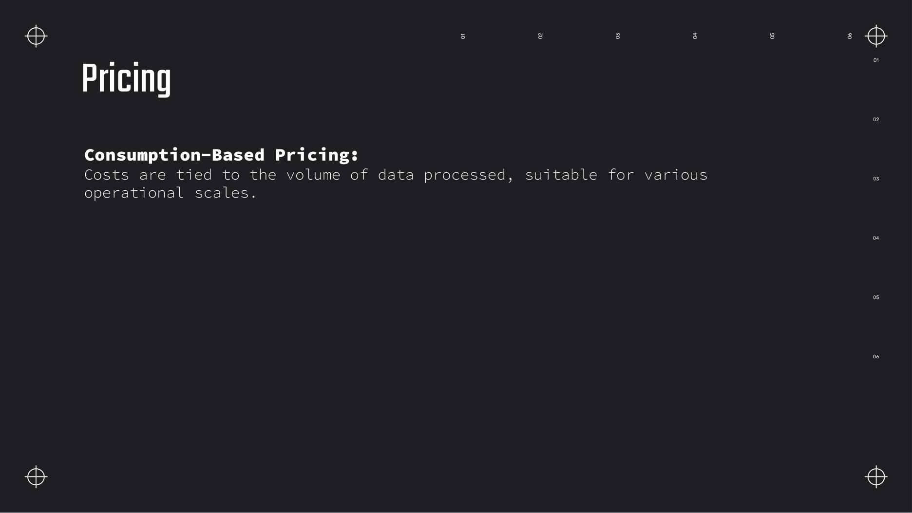
Kinesis Data Streams versus Firehose
Both move streaming data on AWS, but they solve different problems. Data Streams is a durable, replayable buffer for real-time processing. Firehose is a managed delivery truck to storage and analytics endpoints.
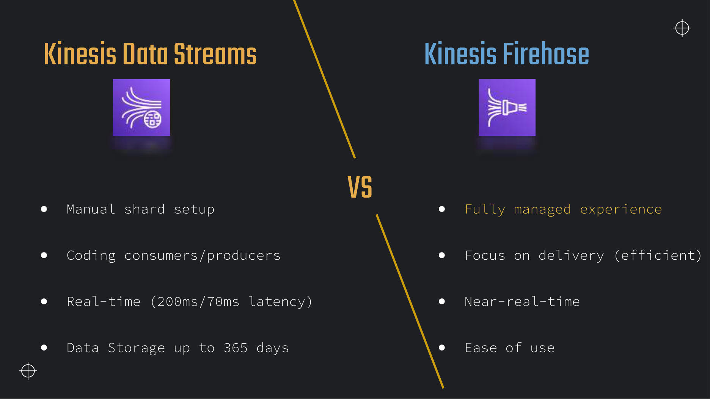
| Feature | Kinesis Data Streams | Kinesis Data Firehose |
|---|---|---|
| Operational model | Manual shard setup (provisioned) or automatic (on-demand) | Fully managed — no shards |
| Producers / consumers | You code producers and consumers (SDK, KPL, KCL, Lambda, Flink) | Configure source and destination — minimal code |
| Latency | Real time — ~200 ms propagation (standard), ~70 ms (EFO) | Near real time — buffer interval 60–900 s |
| Retention | 24 hours default, up to 365 days | None — no data stored in Firehose |
| Replay | Yes — consumers re-read within retention window | No replay — forward delivery only |
| Scaling | Add/split/merge shards or on-demand auto-scale | Automatic — AWS scales capacity |
| Transformation | In consumer (Lambda, Flink, custom) | Built-in Lambda transform; JSON → Parquet/ORC conversion |
| Multiple consumers | Many independent consumers on same stream | One delivery pipeline per delivery stream (fan-out via KDS upstream) |
| Destinations | Any consumer you build | S3, Redshift, OpenSearch, Splunk, HTTP, third-party partners |
| Ordering | Strict per partition key within a shard | Best effort — batching may reorder within a buffer window |
| Pricing unit | Shard-hour + PUT payload units (+ EFO fees) | Per GB ingested/delivered |
| Typical pattern | Real-time analytics, fan-out to multiple apps, replay | Load streaming logs/events into S3 or a warehouse with least code |
Managed Service for Apache Flink
Amazon Managed Service for Apache Flink (formerly Kinesis Data Analytics) runs Apache Flink applications without you managing clusters. You write SQL, Python, Scala, or Java; AWS provisions KPUs, handles checkpoints, and scales capacity. Use it when the question needs stateful windowed aggregations or stream SQL over KDS or MSK — not for simple record forwarding (that is Lambda or Firehose).
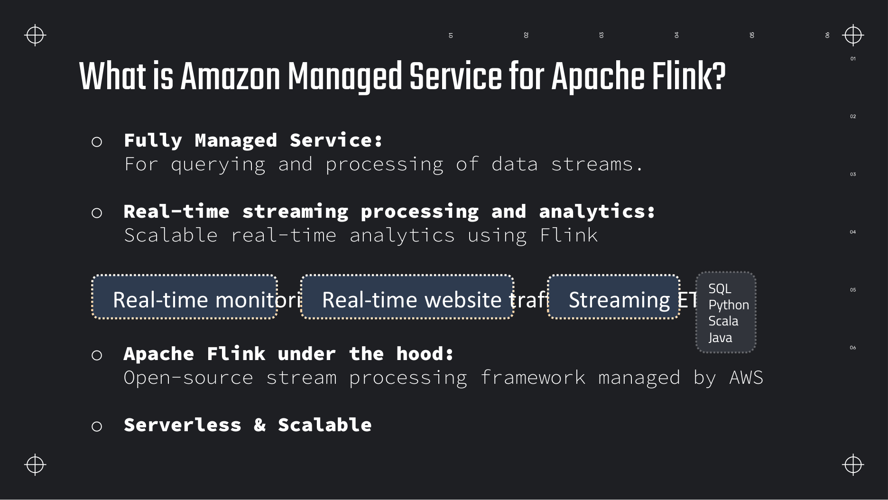
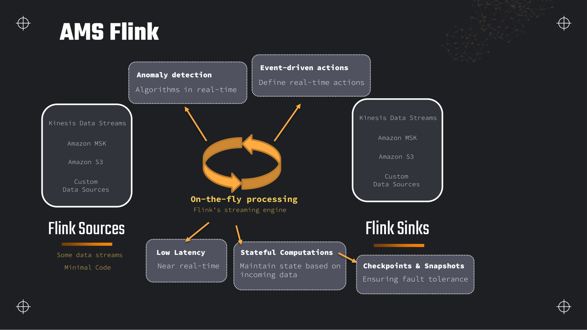
Streaming SQL and the Flink application model
A Flink application has a source (KDS, MSK, or custom), one or more SQL or DataStream transformations, and a sink (KDS, MSK, S3, Lambda, JDBC, etc.). In SQL mode you define streams and tables, then run continuous queries that never terminate — unlike batch SQL in Athena.
Windowing — tumbling, sliding, and session
| Window type | Behaviour | Example use |
|---|---|---|
| Tumbling | Fixed-size, non-overlapping time buckets | Count orders per minute |
| Sliding | Fixed-size buckets that overlap by a slide interval | Moving average over the last five minutes, updated every minute |
| Session | Gap-based — a window closes after N seconds of inactivity | User session length on a website |
CREATE TABLE clickstream (
user_id STRING,
page STRING,
event_time TIMESTAMP(3),
WATERMARK FOR event_time AS event_time - INTERVAL '5' SECOND
) WITH (
'connector' = 'kinesis',
'stream' = 'dea-lab-events',
'aws.region' = 'us-east-1',
'format' = 'json'
);
CREATE TABLE page_counts (
page STRING,
window_start TIMESTAMP(3),
hits BIGINT,
PRIMARY KEY (page, window_start) NOT ENFORCED
) WITH (
'connector' = 'upsert-kafka' -- or kinesis / jdbc sink
);
INSERT INTO page_counts
SELECT
page,
TUMBLE_START(event_time, INTERVAL '1' MINUTE),
COUNT(*)
FROM clickstream
GROUP BY page, TUMBLE(event_time, INTERVAL '1' MINUTE);Built-in anomaly detection algorithms
Managed Flink ships SQL functions for unsupervised anomaly detection on streams — no ML pipeline required:
- RANDOM_CUT_FOREST — general-purpose anomaly scoring on numeric streams; flags points that do not fit the learned forest model.
- HOTSPOTS — detects localized spikes in multidimensional data (e.g. one API endpoint suddenly dominating traffic).
Both operate in real time within Flink windows and are exam distractors alongside SageMaker — choose Flink when the question says "SQL on a stream" or "detect anomalies without training a model".
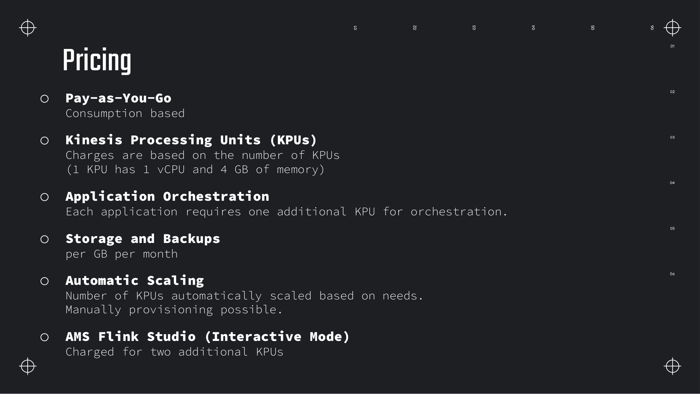
Amazon MSK
Amazon Managed Streaming for Apache Kafka (MSK) runs open-source Apache Kafka on AWS. You get Kafka APIs, topics, partitions, consumer groups, and the entire Kafka ecosystem (Connect, MirrorMaker, ksqlDB on EC2) — with AWS handling broker patching, AZ failover, and storage. Choose MSK when the workload is already Kafka-native or needs message sizes, retention, and auth models that Kinesis does not offer.
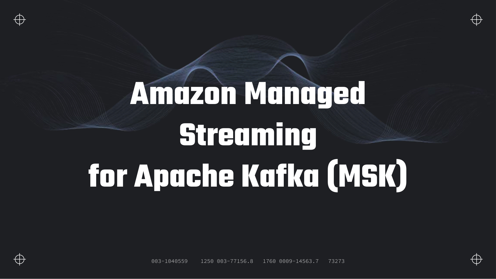
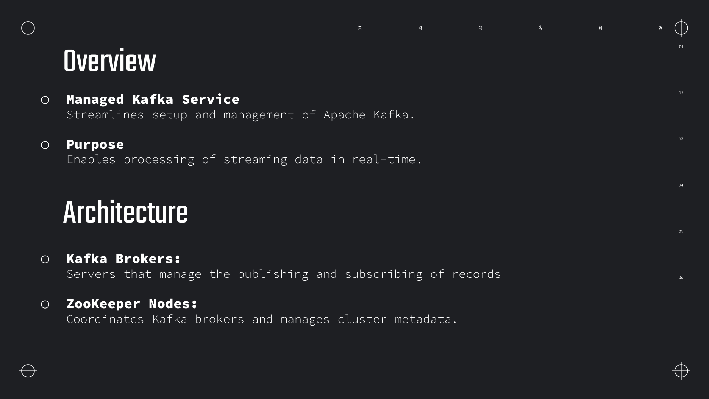
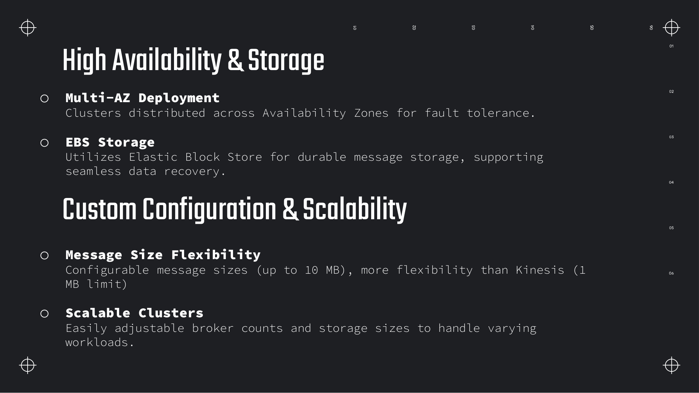
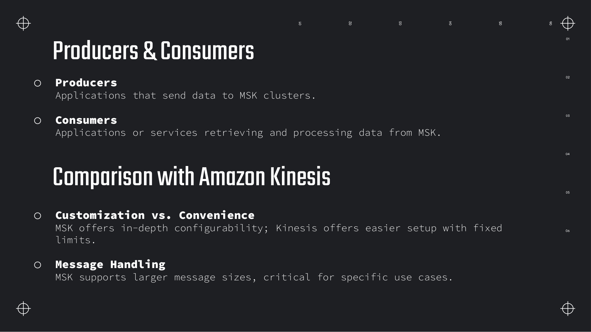
MSK Serverless
MSK Serverless removes broker sizing — AWS scales compute and storage automatically. You pay for cluster hours and data in/out rather than per broker instance. Good for variable workloads and teams that want Kafka semantics without capacity planning. Still no free tier.
MSK Connect
Managed Kafka Connect workers for streaming data between MSK and external systems (S3, JDBC databases, OpenSearch, Debezium CDC) without writing custom consumers. AWS hosts the Connect cluster; you deploy pre-built or custom connectors. Pairs with Section 18 migration patterns for CDC ingestion.
Authentication options
| Method | How it works | When to use |
|---|---|---|
| IAM | AWS SigV4 authentication; policies on cluster ARN | AWS-native apps, least external credential management |
| SASL/SCRAM | Username/password stored in Secrets Manager; Kafka ACLs authorise topics | Non-AWS clients, fine-grained topic ACLs |
| Mutual TLS (mTLS) | Client and broker present certificates; private CA in ACM | Strict zero-trust, on-prem clients |
| Unauthenticated TLS | Encryption in transit without client auth (or plain text in VPC — not recommended) | Legacy dev/test only |
MSK versus Kinesis Data Streams
Both ingest streaming data at scale, but MSK gives you Kafka's full flexibility while Kinesis gives you AWS-native integration with less to operate. The exam often presents a scenario where either could work — the qualifier tells you which wins.
| Feature | Amazon MSK | Kinesis Data Streams |
|---|---|---|
| Operational overhead | More management — broker count, Kafka version, storage, ACLs | More managed — shards or on-demand; no brokers to patch |
| Pipeline complexity | Full Kafka ecosystem — Connect, MirrorMaker, ksqlDB | Straightforward AWS-native fan-out to Lambda, Flink, Firehose |
| Message size limit | Configurable up to 10 MB (default 1 MB) | Hard 1 MB per record |
| Partitioning unit | Topics and partitions | Streams and shards |
| Scaling | Add brokers; increase partition count (cannot shrink partitions) | Split/merge shards; on-demand auto-scale up to 200 MB/s |
| Retention | Per-topic, limited by EBS storage (days to weeks typical; unbounded with tiered storage) | 24 h default, up to 365 days — time-based, not size-based |
| Encryption in flight | TLS or plain text (configurable) | TLS by default |
| Encryption at rest | KMS | KMS (SSE-KMS) |
| Access control | IAM, SASL/SCRAM, mTLS, Kafka ACLs | IAM policies only |
| Ordering guarantee | Per partition | Per partition key within shard |
| Consumer model | Kafka consumer groups with offset commits | Shard iterators, KCL checkpoints in DynamoDB |
| AWS integration | Good — MSK Connect, Lambda event source (with auth setup) | Native — Lambda, Firehose, Flink, CloudWatch metrics |
| Pricing model | Broker-hour + EBS storage (+ Serverless cluster-hour) | Shard-hour + PUT payload units |
| Free tier | None | No always-free tier; on-demand has no minimum shards beyond usage |
Deeper detail and exam edge cases
Shard-hour economics, extended retention tiers, Firehose buffer gotchas, and MSK Serverless ceilings — the pricing and quota layer beneath the architecture diagrams.
Limits and quotas that decide answers
| Limit | Value | Adjustable? | Why it matters |
|---|---|---|---|
| Per-shard write throughput | 1 MB/s or 1,000 records/s (whichever hits first) | Yes — add shards or on-demand scale | Hot partition keys throttle one shard while others sit idle. |
| Per-shard read (standard consumers) | 2 MB/s shared across all standard consumers on the shard | Yes — EFO or more shards | Five consumers still split 2 MB/s — not 2 MB/s each. |
GetRecords calls per shard per consumer | 5 per second (soft) | Partially — reduce poll rate or use EFO | Aggressive polling returns empty arrays and wastes API quota. |
| Enhanced fan-out read per consumer per shard | 2 MB/s dedicated; ~70 ms propagation | Yes — register up to 20 EFO consumers per stream | Each consumer-shard pair bills hourly regardless of read volume. |
| Maximum record size (KDS) | 1 MB including partition key | No (hard) | Larger payloads require MSK (up to 10 MB configurable) or S3 reference pattern. |
| Default retention (KDS) | 24 hours | Yes — up to 365 days extended retention | Replay window for Lambda/Flink recovery; extended tiers bill per GB-month beyond 24 h. |
| On-demand write capacity | Starts 4 MB/s and 4,000 records/s; scales to 200 MB/s and 200,000 records/s | Automatic — doubles capacity when exceeded for 30 days | Spike traffic raises the floor for a month; not instant shrink when load drops. |
PutRecords batch | Up to 500 records or 5 MB per call | No (hard) | Partial failure in response — retry only failed records, not the whole batch. |
| Firehose buffer size (S3 destination) | 1 – 128 MB; interval 0 – 900 s for S3 (0 s = flush as soon as possible subject to 1 MB minimum) | Yes — per delivery stream | Legacy exam answers say 60 s minimum; S3 destinations now support 0-second interval for lowest latency. |
| Firehose transform Lambda timeout | Up to 6 minutes per batch | Yes — function timeout setting | Separate from the 15-minute Lambda max when the same code runs as a Kinesis consumer. |
| Managed Flink KPU | 1 KPU = 1 vCPU + 4 GB RAM; minimum one orchestration KPU plus compute KPUs | Yes — auto-scaling | Idle minimum is orchestration KPU even when no records flow. |
| MSK message size | Default 1 MB; configurable up to 10 MB per broker | Yes — broker configuration | Key differentiator from Kinesis 1 MB hard cap. |
| MSK Serverless max partitions | 2,400 partitions per cluster (soft) | Yes — quota increase | Serverless removes broker sizing but retains partition and throughput ceilings. |
| MSK Connect workers | Per connector capacity units (MCUs) | Yes — scale workers | CDC connectors to S3 or OpenSearch bill continuously while workers run. |
What you actually pay for
| Billed dimension | Unit | How to spend less |
|---|---|---|
| KDS shard-hour (provisioned) | Per shard per hour per stream (us-east-1: ~0.015 USD/shard-hour) | Right-size shard count; merge idle shards; consider on-demand for spiky workloads. |
| KDS PUT payload units | Per million records (25 KB rounded up per record) | KPL aggregation packs many user records into one 1 MB KDS record. |
| Extended retention (beyond 24 h) | Per GB-month tiered by retention window (24 h–7 d, 7–30 d, 30–365 d) | Land to S3 via Firehose for long-term archive instead of 365-day stream retention. |
| Enhanced fan-out | Consumer-shard-hour plus data retrieval per GB | Use standard consumers when one or two readers suffice; EFO only when read bandwidth or latency requires it. |
| Firehose data ingestion | Per GB ingested and delivered (us-east-1: ~0.029 USD/GB for first 500 TB tier) | Larger buffers → fewer S3 PUTs but higher latency; enable compression on S3 destination. |
| Firehose dynamic partitioning | Additional per GB processed when enabled | Skip if a downstream Glue crawler can partition batch landings cheaply enough. |
| Firehose Lambda transform | Lambda invoke and duration charges per buffered batch | Keep transforms lightweight; use built-in Parquet conversion when schema is stable. |
| Managed Flink KPU-hour | Per KPU-hour plus one orchestration KPU always on (us-east-1: ~0.11 USD/KPU-hour) | Right-size auto-scaling bounds; stop applications when idle; compare against Lambda at low volume. |
| Flink checkpoints / snapshots in S3 | S3 storage for state backend | Tune checkpoint interval; expire old savepoints after upgrades. |
| MSK broker-hour + EBS storage | Per broker instance hour plus GB-month on broker volumes | Delete lab clusters same day; MSK Serverless for variable load but watch partition limits. |
| MSK Serverless | Cluster-hour plus data in/out | Cheaper than three idle kafka.m5.large brokers at low throughput; still no free tier. |
| Cross-AZ Kinesis / MSK traffic | Per GB data transfer between AZs | Co-locate producers and consumers in the same AZ where architecture allows. |
Traps that catch people
- PutRecords partial success —
PutRecordscan return HTTP 200 withFailedRecordCount > 0. Retry only failed entries with exponential backoff; blind full-batch retry duplicates successful records downstream. - On-demand capacity floor — When write rate exceeds current capacity, on-demand mode doubles throughput limits for 30 days. Cost and capacity do not snap back when traffic drops — plan for the elevated floor.
- Firehose 60-second minimum is outdated for S3 — Many exam scenarios still assume 60 s buffer interval. S3 destinations now support 0-second interval (flush as soon as practical). Near-real-time questions may accept Firehose where they once required KDS only.
- Firehose has no replay — Failed records after retries land in the error prefix; successfully delivered data cannot be re-read from Firehose. Recovery requires the upstream KDS stream (within retention) or S3 reprocessing.
- Dynamic partitioning cost — Parsing metadata for S3 prefixes in Firehose adds a per-GB charge on top of ingestion. Cheap at small volume; expensive at TB/day compared with periodic Glue partitioners.
- KPL without de-aggregation — Consumers using plain SDK loops see protobuf blobs, not JSON. KCL de-aggregation library, Managed Flink, and Firehose handle this automatically — custom consumers must not skip the step.
- Flink orchestration KPU — Every Managed Flink application pays for at least one orchestration KPU in addition to compute KPUs. Stopping the app stops compute KPUs; forgetting to stop the application does not.
- Checkpoint vs savepoint — Checkpoints are automatic fault-tolerance snapshots; savepoints are manual, consistent images for code upgrades. Restarting from the wrong one after a schema change replays wrong state.
- MSK partition count is one-way — You can increase partitions but not decrease them. Over-partitioning small topics wastes broker resources and exam scenarios testing "reduce partitions" have no valid answer.
- Hot shard ≠ add consumer — Write throttling on one shard is fixed by resharding or better partition keys, not by adding Lambda consumers. Consumers only read; they do not increase ingest capacity.
Troubleshooting playbook
| Symptom | Most likely cause | What to check / fix |
|---|---|---|
WriteProvisionedThroughputExceeded on one shard | Skewed partition key (hot shard) | CloudWatch WriteProvisionedThroughputExceeded by ShardId; redesign key cardinality or add random suffix. |
FailedRecordCount in PutRecords response | Per-record throttling or internal error | Retry failed indices only; backoff; split batch; check shard-level metrics. |
| Firehose S3 prefix empty after traffic | Buffer interval not elapsed; transform returns ProcessingFailed | Check Firehose DeliveryToS3.Success metrics; inspect error prefix; verify Lambda returns one output record per input with matching recordId. |
| Firehose objects too small / high S3 PUT cost | Buffer size and interval too low | Raise buffer to 5–128 MB and interval toward 60–900 s unless latency SLA forbids it. |
Managed Flink KafkaConsumer lag growing | Under-provisioned KPUs or slow state backend | Flink dashboard records-lag-max; increase KPUs; check checkpoint duration and S3 checkpoint errors. |
| Flink job restarts from old state after deploy | Automatic checkpoint used instead of savepoint | Create savepoint before stop; restore from savepoint with new code; verify operator state compatibility. |
| MSK consumer cannot connect from Lambda | Auth mismatch — IAM vs SASL/SCRAM | Event source mapping auth type must match cluster; Secrets Manager for SCRAM; security groups on brokers. |
| MSK Connect task FAILED | Connector misconfiguration or MCU under-provisioned | Connect worker logs in CloudWatch; increase MCUs; verify source/target IAM and network path. |
Production patterns
The standard AWS-native pipeline is KDS as durable hub: producers write once; Lambda handles real-time alerts; Managed Flink runs windowed aggregations; Firehose delivers near-real-time batches to S3 in Parquet with dynamic partitioning. MSK replaces KDS when teams bring Kafka clients, Connect connectors, or messages above 1 MB — not because MSK is "more enterprise".
Hub-and-spoke on KDS
- 24-hour minimum retention; extend to 7+ days only when replay SLA requires it and S3 raw is not yet landing.
- Firehose as one consumer for lake load; never the sole copy if compliance requires replay.
- CloudWatch alarm on
GetRecords.IteratorAgeMilliseconds> 60 s for each consumer group.
Anti-pattern
Firehose-only pipeline for fraud scoring that must react in seconds. Buffer interval alone adds tens of seconds; no stream retention means no rewind after a bad transform deploy. Put KDS upstream.
Dual-path streaming — real time plus lake landing
aws s3 ls s3://dea-lab-ab-4821/curated/firehose-errors/processing-failed/ --recursive
# Replay: re-ingest to KDS or run Glue job on error prefix after fixing transformWhere this fits with the rest of the exam
Streaming is the spine of Domain 1 (34%). Almost every ingestion scenario connects to storage, compute, or integration elsewhere.
- Section 5 — Lambda — Kinesis and MSK event source mappings, partial batch failure, poison-pill recovery; Lambda is a consumer, not a stream store.
- Section 7 — S3 — Firehose destinations, Parquet landing zones, lifecycle on curated prefixes fed by streaming load.
- Section 3 — Athena — query Firehose-delivered Parquet with partition projection after dynamic partitioning.
- Section 4 — Glue — batch reprocessing from S3 when stream retention expired; Glue streaming as alternative to Flink for Spark teams.
- Section 18 — Migration — MSK Connect and Debezium CDC into MSK or S3 for database capture.
Interview questions
Answer each one out loud before opening it.
When would you choose Kinesis Data Streams over Firehose?Comparison
Choose Kinesis Data Streams when you need sub-second latency, multiple independent consumers on the same data, or replay within a retention window. Typical patterns: real-time fraud scoring with Flink, fan-out to both Lambda alerting and Firehose archiving, or reprocessing yesterday's events after a bug fix.
Choose Firehose when the goal is simply to deliver streaming data to S3, Redshift, or OpenSearch with minimal code and near-real-time latency (60+ seconds) is acceptable. Firehose also wins on "least operational overhead" for load-to-lake scenarios.
Explain how partition keys affect ordering and throughput in Kinesis Data Streams.Fundamentals
Kinesis hashes the partition key to assign each record to exactly one shard. Records with the same partition key are strictly ordered by sequence number within that shard. Records with different keys may land on different shards and have no ordering guarantee relative to each other.
For throughput, a partition key with low cardinality (e.g. country=US for all US traffic) creates a hot shard that hits the 1 MB/s ingest limit while other shards stay idle. High-cardinality keys (device ID, user ID, UUID suffix) spread load evenly across shards.
What is enhanced fan-out and when is the extra cost justified?Performance
Standard consumers on a shard share 2 MB/s of read throughput — ten consumers still split that 2 MB/s. Enhanced fan-out registers a consumer for dedicated 2 MB/s per shard, pushed over HTTP/2 with ~70 ms propagation delay instead of ~200 ms polling.
Justify the cost when you have more than two or three concurrent consumers that each need full read bandwidth, or when latency requirements drop below 200 ms. With only one consumer, standard mode is cheaper and sufficient. Maximum 20 EFO consumers per stream.
A producer is getting ProvisionedThroughputExceededException. What do you check?Troubleshooting
First, check CloudWatch WriteProvisionedThroughputExceeded per shard to confirm whether one shard is hot. If a single shard spikes, the partition key is skewed — redesign for higher cardinality or add a random suffix and deduplicate downstream.
If all shards are evenly loaded and still throttling, you need more capacity: add shards in provisioned mode, switch to on-demand, or reduce per-record size with KPL aggregation. Implement exponential backoff on retries — tight retry loops make throttling worse.
Why does Firehose have no replay, and how do you architect around that?Gotcha
Firehose is a forward-only delivery pipeline — it buffers, optionally transforms, and writes to a destination. It does not store a replayable log. Failed records after retries go to an error S3 prefix, but successfully delivered data cannot be re-read from Firehose.
If replay is a requirement, place Kinesis Data Streams upstream as the durable buffer with retention, attach Firehose as one consumer for S3 delivery, and keep other consumers for real-time processing. Alternatively, rely on S3 as the system of record and reprocess from there with Glue or Athena.
Compare provisioned and on-demand capacity mode for Kinesis Data Streams.Design
Provisioned: you set shard count explicitly and pay per shard-hour. Scale by splitting, merging, or updating shard count. Best when traffic is predictable and you want precise cost control.
On-demand: AWS auto-scales shards from observed traffic over the last 30 days. Starts at 4 MB/s and 4,000 records/s write, scales up to 200 MB/s and 200,000 records/s. Best for spiky or unknown workloads and "least operational overhead" exam answers. Both modes share the same per-shard throughput limits once shards exist.
What delivery semantics does Kinesis guarantee, and what must your consumer do about it?Fundamentals
Kinesis Data Streams guarantees at-least-once delivery — records may be delivered more than once, especially after consumer failures or resharding. There is no exactly-once guarantee at the stream level.
Consumers must be idempotent: checkpoint with KCL only after successful processing, use deterministic write keys in DynamoDB or S3, or deduplicate on a natural key. Lambda event source mappings expose bisectBatchOnFunctionError and parallelisation factor to limit blast radius of duplicates.
When would you pick MSK over Kinesis Data Streams?Comparison
Pick MSK when the workload is Kafka-native: existing Kafka producers/consumers, need for Kafka Connect or MirrorMaker, messages larger than 1 MB (up to 10 MB), SASL/SCRAM or mTLS auth, or fine-grained Kafka ACLs per topic.
Pick Kinesis for greenfield AWS pipelines where tight integration with Lambda, Firehose, and Managed Flink matters more than Kafka API compatibility, and where 1 MB records and IAM-only auth are sufficient. Kinesis also wins on "straightforward setup" and on-demand scaling without broker management.
Describe the Firehose Lambda transformation contract.Exam
Firehose invokes Lambda with a batch of records, each containing recordId and base64 data. The handler must return {"records": [...]} with one output entry per input entry, matching recordId values.
Each output record needs a result field: Ok (deliver transformed or original data), Dropped (skip), or ProcessingFailed (send to error prefix). Omitting the records array or mismatched IDs causes delivery failures. Processing time limit is six minutes per batch.
What are KPUs in Managed Service for Apache Flink, and how does pricing work?Cost
A Kinesis Processing Unit (KPU) is one vCPU and 4 GB of memory running your Flink application. AWS charges per KPU-hour. Every application consumes at least one KPU for orchestration plus additional KPUs for compute — auto-scaling adds KPUs under load.
Additional charges apply for durable application backups (checkpoints/snapshots stored in S3) and for Studio interactive mode (two extra KPUs while a Studio session is open). Compare against Lambda cost when the question asks for the most cost-effective option at low volume.
Hands-on practice
Streaming resources bill by the hour while they exist. Delete everything at the end of each task. MSK has no free tier — skip task 3 unless you accept the cost.
-
Create an on-demand Kinesis Data Stream named
Kinesis → Data streams → Create data streamdea-lab-events, put ten records with varied partition keys using the CLI, and confirm they arrived viaget-shard-iteratorandget-records.CloudWatch
IncomingRecordsshows ten;get-recordsreturns base64 JSON payloads.Show stepsConsole + CLI
- Kinesis → Data streams → Create. Name
dea-lab-events, capacity mode On-demand. - Put records from the CLI (vary partition keys to spread across shards).
- Read back from one shard to verify.
aws kinesis create-stream --stream-name dea-lab-events \ --stream-mode-details StreamMode=ON_DEMAND --region us-east-1 for i in $(seq 1 10); do aws kinesis put-record --stream-name dea-lab-events \ --partition-key "user-$i" \ --data "{\"n\":$i}" --region us-east-1 done SHARD=$(aws kinesis list-shards --stream-name dea-lab-events \ --query 'Shards[0].ShardId' --output text --region us-east-1) ITER=$(aws kinesis get-shard-iterator --stream-name dea-lab-events \ --shard-id "$SHARD" --shard-iterator-type TRIM_HORIZON \ --query 'ShardIterator' --output text --region us-east-1) aws kinesis get-records --shard-iterator "$ITER" --region us-east-1Cleanup: Kinesis →
dea-lab-events→ Delete. On-demand streams still accrue charges until deleted. - Kinesis → Data streams → Create. Name
-
Create a Firehose delivery stream to your lab bucket prefix
Kinesis → Data Firehose → Create Firehose stream → Direct PUT → S3curated/firehose/with a 60-second buffer, then send five records withput-recordand verify the S3 object appears.An object under
s3://dea-lab-…/curated/firehose/within about 60 seconds of the last record.Show stepsConsole + CLI
- Firehose → Create → Source Direct PUT, destination Amazon S3, bucket
dea-lab-<initials>-<random>, prefixcurated/firehose/. - Buffer size
1MB, buffer interval60seconds. Enable the S3 error output prefixcurated/firehose-errors/. - Send test records and list S3 after one minute.
STREAM=dea-lab-firehose BUCKET=dea-lab-ab-4821 aws firehose put-record --delivery-stream-name $STREAM \ --record '{"Data":"{\"event\":\"test-1\"}"}' --region us-east-1 sleep 70 aws s3 ls s3://$BUCKET/curated/firehose/ --recursiveCleanup: delete the Firehose delivery stream, then delete objects under
curated/firehose/andcurated/firehose-errors/in the bucket. - Firehose → Create → Source Direct PUT, destination Amazon S3, bucket
-
Create a Lambda function triggered by
Lambda → Create function → Add trigger → Kinesisdea-lab-eventsthat logs each record's partition key, then invoke the stream with test data and confirm CloudWatch Logs output.CloudWatch log group for the function shows partition keys from the test records within seconds.
Show stepsConsole
- Create a Python Lambda with basic execution role plus
AWSLambdaKinesisExecutionRole. - Add a Kinesis trigger on
dea-lab-events, batch size 10, starting position Latest. - Handler: decode base64
record["kinesis"]["data"]and printpartitionKey. - Put a record to the stream and check CloudWatch Logs.
Cleanup: remove the Kinesis trigger, delete the Lambda function, then delete the Kinesis stream if no longer needed.
- Create a Python Lambda with basic execution role plus
-
Optional and billable: launch a minimal MSK provisioned cluster (kafka.t3.small, one broker per AZ is not supported — use three brokers), confirm the bootstrap brokers string, then delete the cluster within 30 minutes.
Amazon MSK → Create cluster → ProvisionedCluster state Active; bootstrap broker list visible on the cluster detail page.
Show stepsConsole
- MSK → Create cluster → Provisioned, Kafka 3.x,
kafka.t3.small, 3 brokers, 100 GB EBS each, IAM auth enabled. - Wait for Active (~15–20 min). Copy bootstrap brokers from the cluster details.
- Do not leave running — MSK has no free tier.
Cleanup: MSK → select cluster → Delete. Confirm deletion completes (brokers terminate). Also delete the MSK security group if it is no longer used.
- MSK → Create cluster → Provisioned, Kafka 3.x,
Recap
- Kinesis family: Data Streams (durable buffer), Firehose (delivery), Managed Flink (compute). MSK is Kafka, not Kinesis.
- Per shard: 1 MB/s or 1,000 records/s in; 2 MB/s out shared (standard) or 2 MB/s per EFO consumer (max 20).
- Partition key → shard assignment → strict ordering by sequence number within a shard. Avoid hot keys.
- On-demand mode: starts 4 MB/s write, scales to 200 MB/s. Provisioned: you manage shard splits and merges.
- At-least-once delivery — idempotent consumers; KCL checkpoints in DynamoDB.
- Firehose: buffer 1–128 MB or 60–900 s; Lambda transform must return
recordsarray; no retention, no replay. - Real time → KDS/Flink. Near real time → Firehose. Replay → KDS or MSK, not Firehose.
- Managed Flink: tumbling/sliding/session windows; RANDOM_CUT_FOREST and HOTSPOTS for anomalies; KPU pricing.
- MSK: up to 10 MB messages; IAM, SASL/SCRAM, mTLS; MSK Connect for Kafka Connect; no free tier.
- Record size limit: 1 MB (Kinesis) vs configurable up to 10 MB (MSK).
- SSE-KMS on streams requires KMS permissions on producers and consumers.
- Iterator age climbing → consumer too slow or too few shards; EFO or scale out.